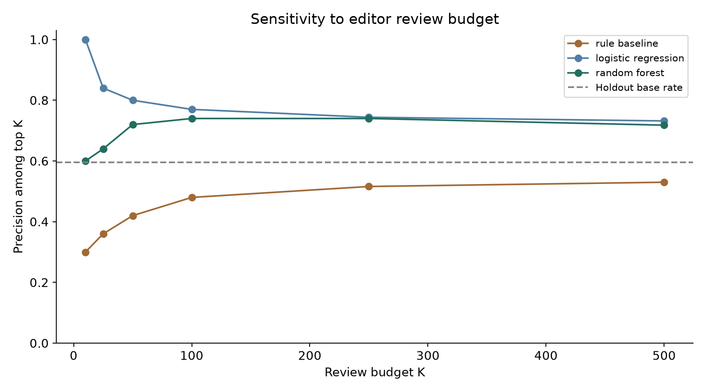

BACKEND DEVELOPMENT & ENGINEERING
Clear contracts.
Tested behavior.
Useful decisions.
I'm Hamza Afzal. This project demonstrates one skill: building a tested backend API that turns anonymized search signals into explainable content-review priorities.
Invite me to an interview ↗ Inspect the work ↓
For a backend engineering lead evaluating an intern. Interview requests open a GitHub issue form; nothing is sent automatically.
01 / BACKEND CASE STUDY
Search signals in.
Review priorities out.
The problem
A review queue needs a clear request contract, stable ranking, and useful reasons. Invalid signals should fail predictably, and source data should stay out of responses.
What I built with AI assistance
A dependency-free Python REST API with strict schemas, bounded requests, deterministic tie handling, structured errors, and a documented OpenAPI contract. The POST endpoint uses a transparent fixed rule; the ML study is a separate notebook.
What came of it
A runnable backend proof with real HTTP integration tests. The ranking endpoint works independently of the research outputs; missing aggregate metrics produce a documented 503 response.
1–50 synthetic page IDs · finite bounded signals
Exposure · freshness · CTR opportunity · depth
Eligibility · score · rank · reason codes
Try the real local API
Start python work/backend_api/server.py and serve this site locally at port 8000. This button calls the Python server on loopback. The public paper does not host that server.
Ready. Start the backend and open the local site to run this demonstration.
02 / RESEARCH CASE STUDY
Measure the result.
Keep the limits visible.
The problem
Simple review heuristics may miss patterns in the data. A model comparison needs held-out clients, a shared baseline split, and explicit leakage checks.
What I did with AI assistance
Used the public-safe FlyRank starter snapshot to compare a fixed baseline with two model candidates. Selected logistic regression using validation average precision, then measured it on eight untouched client groups.
What came of it
Top-50 precision rose from 42% to 80% on the held-out split. ROC AUC was only 0.597; same-window features and an observed proxy label limit what this proves.
Read the complete paper →
ABOUT
Make the behavior
easy to inspect.
My focus is Backend Development and Engineering. My recurring work includes API coding, request-schema design, database design, debugging, testing, planning, refactoring, architecture decisions, and checking finished work.
This portfolio records an AI-assisted internship project. The code, executed notebooks, methods, and limitations are available so a reviewer can assess the actual artifact.
Continue the conversation
If you're a backend engineering lead looking for an intern, use the interview-request link to start a conversation about the API and its tradeoffs.
Next case planned: deploy and harden the backend review API, with HTTPS, authentication, rate limits, tests, rollback, and actual deployment evidence. It will use the same problem → work → outcome structure.